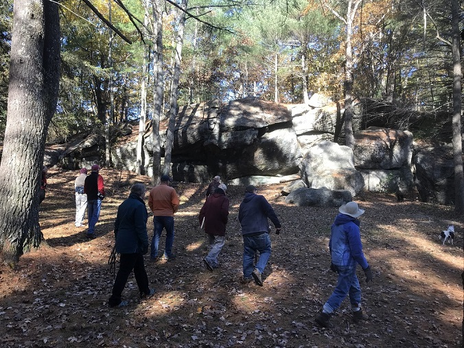
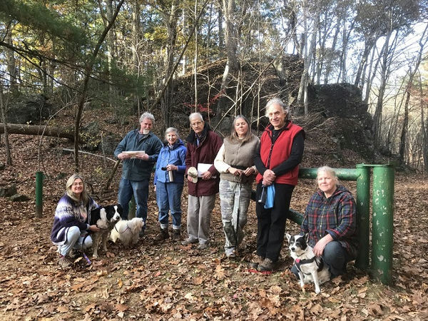
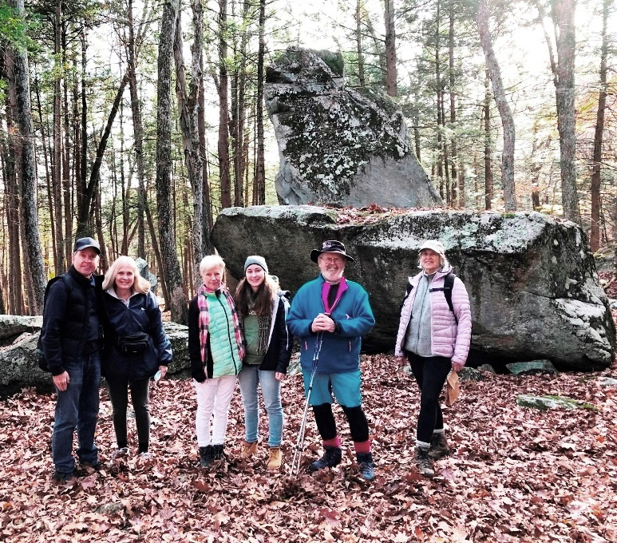

The videos are on our new YouTube channel.
Thanks go to Matt Adams for editing them.
Videos that are only available for NEARA members are behind a login at SiteDB.org.
Converging Lines of Evidence on Council Rock Mountain, Dave Gutkowski & Tom Elmore
(This is only available for NEARA members by logging in at SiteDB.org)
There were 7 field trips scheduled for the next day.
Everyone really enjoyed the great weather and interesting sights and meeting new people.
Here are some photos from those field trips:
Connecticut, New London County: Gungywamp, by Harvey BufordConnecticut, New London County: Gungywamp, by Harvey BufordConnecticut, New London County: Gungywamp, by Harvey Buford

Massachusetts, Worcester County: Rock House, by Peter Anick

Massachusetts, Worcester County: Rock House, by Peter AnickNew Hampshire, Hillsborough County: Fox Forest, by Walter van RoggenNew Hampshire, Hillsborough County, by Walter van RoggenNew Hampshire, Hillsborough County, by Walter van Roggen

New York, Putnam County: Hawk RockNew York, Ulster County: Lewis Hollow, by Matt AdamsNew York, Ulster County: Lewis Hollow, by Matt AdamsNew York, Ulster County: Lewis Hollow, by Matt AdamsNew York, Ulster County: Lewis Hollow, by Matt AdamsNew York, Ulster County: Lewis Hollow, by Matt AdamsNew York, Ulster County: Lewis Hollow, by Matt AdamsNew York, Ulster County: Lewis Hollow, by Matt Adams
By Matt Adams.
Drag your mouse to change your viewing direction, all around or up and down.
Use your mouse wheel to zoom in or out.
Click on either exit icon twice to visit another spot.